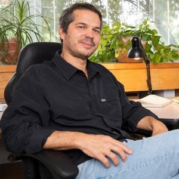
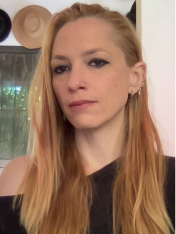

Gabriel Ramos-Fernández
Senior Researcher · DISI Fellow and DISI FacultyGabriel Ramos-Fernández is a full-time Researcher in the Department of Mathematical Modeling of Social Systems at the IIMAS, UNAM. He holds a B.Sc. in Basic Biomedical Research and a Ph.D. in Biology from the University of Pennsylvania, and has held research stays at UNAM's Institute of Physics, the Ecotono Laboratory at the University of Comahue, and the Global Research Centre for Diverse Intelligences at the University of St Andrews. His research focuses on the emergence of global properties in biological and social systems, especially collective information processing, using tools such as social interaction observation, network analysis, mathematical modeling, and simulations. He is also interested in socio-ecological systems and biodiversity conservation.

Sandra Elizabeth Smith Aguilar
Postdoctoral Researcher · DISI FellowSandra Elizabeth Smith Aguilar is a postdoctoral researcher in the Department of Mathematical Modeling of Social Systems at the IIMAS, UNAM. Sandra, is a biologist trained at UNAM, where she also earned a master's degree in Marine Sciences and Limnology. She holds a Ph.D. in Conservation and Use of Natural Resources from CIIDIR Oaxaca, Instituto Politécnico Nacional. Her research focuses on animal behavior, including humpback whale song and the social behavior of spider monkeys. Since 2013, she has integrated complex systems approaches and social network analysis into her work. She is a DISI Fellow, and coordinates the Oaxaca activities of the Sociedad de Científicos Anónimos.

Alejandra Ciria
Researcher · DISI FellowAlejandra Ciria is a full-time researcher in the Department of Computer Science at the IIMAS, UNAM. She holds a B.Sc. in Psychology, a master's degree in Cognitive Sciences, and a Ph.D. in Experimental Psychology. Head of the Embodied Cognition Lab (Laboratorio de Cognición Corporizada, LabCoCo), originally based at the School of Psychology, UNAM, where she was a full-time professor in Cognitive and Behavioral Sciences from 2020 to 2025. The lab integrates multidisciplinary approaches to study how the body and situated action cycles, grounded in the physical properties of the environment, shape cognitive processes in biological and artificial agents. Her research focuses on embodied cognition + artificial intelligence, and the computational modeling of cognitive processes in biological and artificial systems.